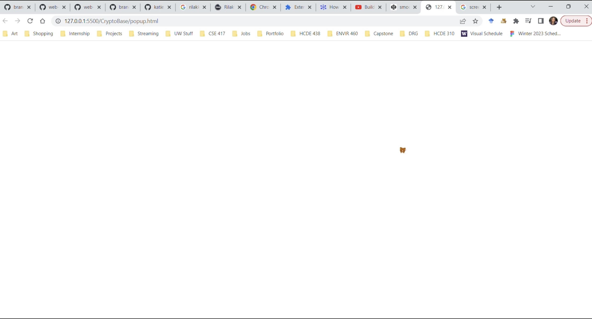

MP1 Writeup
Overview and Usage
- For this project, I built a Chrome extension that replaces the
user's cursor with a Rilakkuma. To run the code, you will need to
follow these steps:
- Download the code for the extension (File name is CryptoBase).
- Open the Chrome Extensions page.
- Turn on "Developer mode" in the top right corner of the page.
- At the top, click the "Load unpacked" button.
- Locate where on your computer the extension was saved, and upload the file.
- Click the puzzle icon at the top of your browser window, next to the website URL.
- Pin "Rilakkuma Buddy" by clicking the pin button.
- Navigate to a new website that isn't Google.
- Click the Rilakkuma Buddy icon, and enjoy your new Rilakkuma cursor!
-
Here is a gif of my Chrome extension in action:

Development Process
I broke up MP1 into several steps to complete the project:
- For this project, I first had to download the extension toolkit that was provided to us on GitHub.
- I played around with the sample extensions provided to get a sense of how the pieces were all working together to create this final product that the user experiences.
- Then, I created my own folder to keep the contents of the extension.
- In this folder, I created several new files, including a manifest.json, popup.html, popup.css, and popup.js. I also added all of the images that were needed for this extension.
- I updated the manifest.json to represent the extension, and wrote the HTML, CSS, and JavaScript code in each file, debugging along the way.
- I ran into an error in the middle, which was that my code only worked when I opened it on Live Server and not as an actual Chrome Extension. Here is when it was opened in the Live Server: 
- Lastly, I uploaded my extension into Google Chrome in the developer mode to test it out, and wrote out the MP1 writeup.
Issue Deep-Dive
An issue I ran into during MP1 was getting my Chrome extension to work. While the extension worked in my live server, it was not working as an actual Chrome extension previously.
To fix this issue, I had to set the cursor to be the image of the Rilakkuma in the popup.css file, and I commented out a lot of unnecessary code. I also added the popup.js file into the "content_scripts" section of the manifest.json file.
Finally after all this, it started working as expected.
Ideas and Future
Here are some ideas and features I might like to add to my site in the future:
- Making the Rilakkuma cursor faded when the user clicks down on their mouse.
- Creating a pop up that allows the user to choose from some options of different Rilakkumas to set as their cursor.
- Maybe sometime in the future I'll consider publishing the extension on Google.
Kudos
Here are some resources I found useful while working on this project: